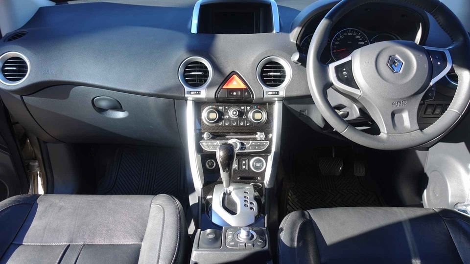

Wreckzone has professional team and licensed Renault Salvage. We are environmentally concerned company that is why we want to recycle as much auto parts as we can. If your Renault car needs too much repairs, is too old, or badly wrecked from an accident that you want to let it go, we’ll gladly take them off your hands in no time, free of charge. And no matter how bad its condition is, we’ll even pay you top cash for cars of all kinds under the renowned Renault brand. Trust us to deliver excellent services and provide outstanding payment for your cars.
Perth’s Premier Scrap Yard: Renault Wreckers WreckZone has professional team and licensed Renault Salvage. We are environmentally concerned company that is why we want to recycle as much auto parts as we can. If your Renault car needs too much repairs, is too old, or badly wrecked from an accident that you want to let it go, we’ll gladly take them off your hands in no time, free of charge. And no matter how bad its condition is, we’ll even pay you top cash for cars of all kinds under the renowned Renault brand. Trust us to deliver excellent services and provide outstanding payment for your cars.

5 Star rated Company: we are the best. One of the highest safety rating agencies gave us top 5 star rating for our excellent services. The dealership background ensures a much-needed quality assurance which you can only expect from such an experienced automotive company. This assures you of high quality services with our products and services. Our online storefront guarantees 100% renewal and even a free inspection for your used cars. Easy Payment: we have payment system of our own, the online system, which includes everything: a payment facility, the business system, an accounting system and a billing system. We will accept almost every kind of car for sale, including trucks, motorbikes, tractors, SUVs, sport-utility vehicles and even pickup trucks.
Perth’s Premier Scrap Yard is dedicated to the recycling of scrap and wreck cars. We do the dismantling of used and broken cars of all makes and models. We only use genuine, quality aftermarket auto parts like wheels, tyres, bumpers, fenders, doors, bonnets, lights, tailgates, etc. We go through all aspects of the automotive industry and make sure we get the maximum market value for your scrap metal. Our collection takes place at private yards, auctionyards and various facilities. We will dispose of your car parts at the right junctions to reuse them. Because this is not a scrap yard as well, and we follow a strict inspection process to ensure that all work is to your advantage. What’s The Difference Between Scrap Yard and Auto Dealer A junk yard is basically an abandoned vehicle site.
The Perth’s Premier Scrap Yard are a reputable company that knows all about clearing parts out of wrecked vehicles. We provide a good price and good services so that the most of the value can be extracted from your cars. We also take care of your title, so that you don’t have to worry about it. Our licensed team is happy to perform all of the necessary work for free of charge. That way, you will receive the much-needed cash, while the cars will be dismantled safely and efficiently. So, why not let us take care of your cars?
Renault Wreckers has professional team and licensed Renault Salvage. We are environmentally concerned company that is why we want to recycle as much auto parts as we can. Our mission is simple: we want to reduce the amount of useless cars that we are having access to, in order to preserve the environment. Unfortunately, we still have lots of abandoned, nearly or completely wrecked Renault cars, so we have a big job in front of us, but we always consider all the pros and cons before a decision. We respect your concerns and deliver only highest quality services. All our tools are in our high tech, safe and trusted facility. Some examples of our services: We are experts when it comes to rebuilding automobiles, from removing old chassis to installing new ones.
We are certain that we can provide excellent and professional services to all Renault car owners out there, just like we have done for many other clients. We will support you all the way while selling your old Renault vehicles and give you a chance to recycle your junk without any hassle, just the way you want it. Are you looking to buy your old wrecked Renault vehicle?
Address:103 Sheffield Rd, Welshpool WA 6106
Phone: (08) 9358 1392